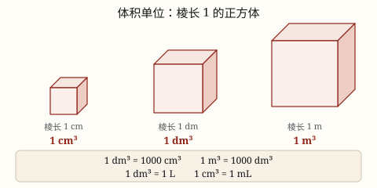

体积和体积单位
物体所占空间的大小叫体积，体积单位是棱长 1 的正方体；1 \textdm^3 = 1000 \textcm^3，1 \textdm^3 = 1 \textL。
| 所属主题 | 立体图形 |
|---|---|
| 所属模块 | 图形与几何 |
| 课标学段 | 第三学段（5~6年级） |
| 前置知识 | 面积和面积单位 |
| 核心素养 | 量感空间观念 |
课标要求
| 图形与几何·图形的认识与测量 | 通过实例了解体积（或容积）的意义，知道体积（或容积）的度量单位，能进行单位之间的换算；体验不规则物体体积的测量方法。 印刷第 32 页 行为动词：了解 |
|---|---|
| 图形与几何·图形的认识与测量 | 在图形认识与测量的过程中，进一步形成量感、空间观念和几何直观。 印刷第 33 页 行为动词：感悟 |
说明
物体所占空间的大小叫体积。两个盒子放在一起，谁占的地方大，谁的体积就大。
怎么比？和量长度、量面积一样，得先有统一的单位。体积单位是棱长 1 的正方体：棱长 1 厘米的正方体，体积是 1 立方厘米（1 \textcm^3）；棱长 1 分米的是 1 立方分米（1 \textdm^3）；棱长 1 米的是 1 立方米（1 \textm^3）。
进率是 1000：1 \textm^3 = 1000 \textdm^3，1 \textdm^3 = 1000 \textcm^3。它和长度（10）、面积（100）都不一样，别套错。
体积单位和容积单位是相通的：1 \textdm^3 = 1 \textL，1 \textcm^3 = 1 \textmL，1 \textL = 1000 \textmL。
容积是容器能容纳物体的体积，要从里面量；体积是物体自己占的空间，从外面量。木箱的壁有厚度，从外面量出来的体积比容积大。
使用场景
买东西看容量：矿泉水 550 mL、牛奶 250 mL、食用油 5 L，瓶子上标的都是容积。
鱼缸注水：要知道鱼缸能装多少升水、要买多大的过滤器，先算里面的容积。
搬家与收纳：纸箱、收纳箱能装多少东西看容积；寄快递有时也按体积算运费。
测量不规则物体：一块石头没法用尺子量，放进水里看水面升高多少，就知道它的体积。
注意点
体积用立方单位：\textcm^3、\textdm^3、\textm^3，不要写成 \textcm^2，那是面积。
进率是 1000，不是 100。1 \textdm^3 = 1000 \textcm^3；照面积的习惯写成 100 是最常见的错。
容积要从里面量。题目给了壁厚（比如木箱壁厚 2 厘米），长、宽、高都要先减去两个壁厚。
要说清是体积还是容积：1 \textdm^3 和 1 \textL 数值一样，但一个说「占多大空间」，一个说「能装多少液体」。
为什么是这样

图 1：棱长 1 的正方体就是体积单位，进率是 1000，不是 100
算理推导
先想「为什么非要有单位」。两个差不多的盒子，光看说不清谁大。就像量桌子长度要用一样长的尺子，量空间大小也要用一样大的小正方体去填。
为什么 1 \textdm^3 = 1000 \textcm^3？棱长 1 分米 = 10 厘米。拿棱长 1 厘米的小正方体去填这个盒子：底面一层能摆 10 × 10 = 100 个。
盒子高也是 10 厘米，能摆 10 层。一共 100 × 10 = 1000 个，每个是 1 \textcm^3，所以这个盒子正好是 1000 \textcm^3，也就是 1 \textdm^3。
同理，棱长 1 米 = 10 分米，一层 100 个、摆 10 层，得到 1 \textm^3 = 1000 \textdm^3。体积进率是 1000，是因为长、宽、高各扩大了 10 倍，10 × 10 × 10 = 1000。
为什么 1 \textdm^3 = 1 \textL？拿一个棱长 1 分米的方盒，把 1 升水倒进去，正好装满。这是量出来的事实，所以两个单位可以换着用。
动手实验
找一个内部长宽高各 1 分米的正方体盒子（或用纸板自己做一个），把 1 升装的饮料倒进去，看是不是正好装满。再用 500 mL 的水瓶倒两次，验证 1 \textL = 1000 \textmL。另找一个透明量杯，记下水位，把一块石头完全浸进去，看水升了多少毫升——升高的那部分就是石头的体积。
按场景的例题
例 1（场景：购物消费） 超市里一小盒牛奶 250 mL，一大瓶牛奶 1 L
一小盒相当于多少立方厘米？一大瓶相当于多少立方分米？
解：因为 1 \textmL = 1 \textcm^3，所以 250 mL = 250 \textcm^3；因为 1 \textL = 1 \textdm^3，所以 1 L = 1 \textdm^3。一大瓶正好能装满棱长 1 分米的方盒。
答：250 立方厘米；1 立方分米。
例 2（场景：计量与估算） 一个长方体鱼缸，从里面量得它的容积是 120 \textdm^3
这个鱼缸最多能装多少升水？合多少毫升？
解：1 \textdm^3 = 1 \textL，120 \textdm^3 = 120 \textL；1 \textL = 1000 \textmL，120 × 1000 = 120000 \textmL。
答：能装 120 升，合 120000 毫升。
例 3（场景：自然现象） 科学课上做排水实验，把一个石块完全浸入装有 300 mL 水的量杯，水面升到 350 mL
这个石块的体积是多少立方厘米？
解：水面上升的那部分水的体积，就是石块占的空间：350 - 300 = 50（mL）。因为 1 \textmL = 1 \textcm^3，所以石块体积是 50 \textcm^3。
答：50 立方厘米。
例 4（场景：校园生活） 学校买了一个内部棱长 1 米的大收纳箱，用来装棱长 1 分米的小收纳盒，小盒子要摆放整齐
最多能装多少个小收纳盒？
解：沿长能放 10 ÷ 1 = 10 个，沿宽 10 个，沿高 10 个，一共 10 × 10 × 10 = 1000（个）。也可以直接比体积：1 \textm^3 = 1000 \textdm^3，每个小盒 1 \textdm^3，正好 1000 个。
答：最多能装 1000 个。
常用推论
1 \textm^3 = 1000 \textdm^3 = 1000000 \textcm^3。
1 \textL = 1000 \textmL；1 \textdm^3 = 1 \textL；1 \textcm^3 = 1 \textmL。
长方体（正方体）体积统一式：V = 底面积 × 高，即 V = abh。
容积从里面量：壁厚为 d 时，内部长 = a - 2d，内部宽、高同理。
物体完全浸入水中，水面上升那部分的体积等于物体的体积。
易错点
错「这个盒子的体积是 24 平方厘米。」
为什么错体积要用立方单位。平方厘米说的是面积，只讲表面多大，不讲占多大空间。
正确体积是 24 立方厘米（24 \textcm^3）。
错「1 \textdm^3 = 100 \textcm^3。」
为什么错把面积的进率 100 套到体积上了。体积是三个方向都扩大 10 倍，10 × 10 × 10 = 1000。
正确1 \textdm^3 = 1000 \textcm^3。
错「木箱壁厚 2 厘米，从外面量长 20 厘米，那里面长也是 20 厘米。」
为什么错容积必须从里面量。两侧壁各厚 2 厘米，一共要去掉 4 厘米。
正确内部长 = 20 - 2 × 2 = 16 厘米。
错「一瓶 550 mL 的矿泉水，体积就是 550 立方分米。」
为什么错把毫升和立方分米配错了对。mL 对应的是 cm³，不是 dm³。
正确550 mL = 550 \textcm^3 = 0.55 \textdm^3。
直观理解
体积单位就是「装东西的小方盒」：1 \textcm^3 只有一颗骰子那么大，1 \textdm^3 像一个粉笔盒，1 \textm^3 大得能让四五个同学站进去。用多大的盒子去数，数出来的结果就带着那个单位。
占空间，叫体积；棱长一，是单位；长度十，面积百，体积进率是一千。